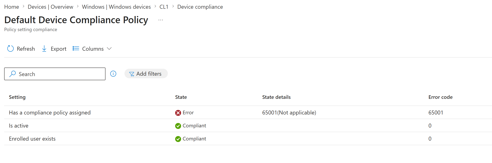
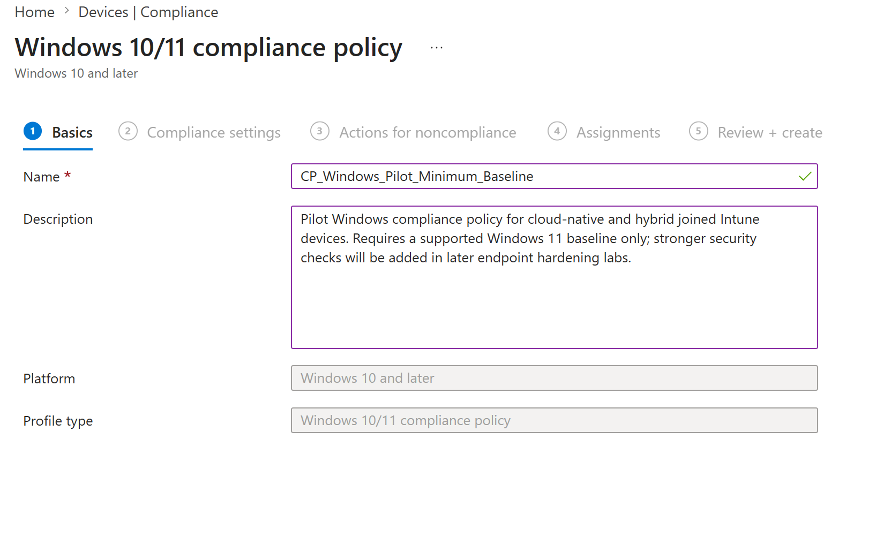
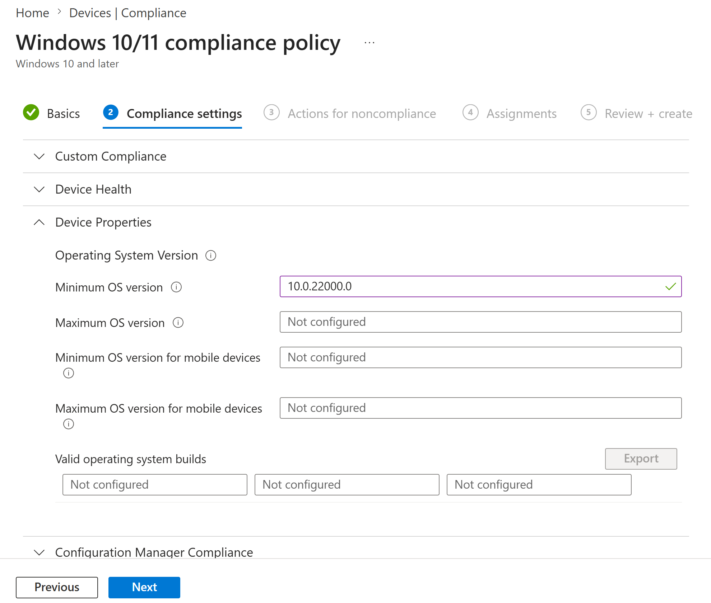
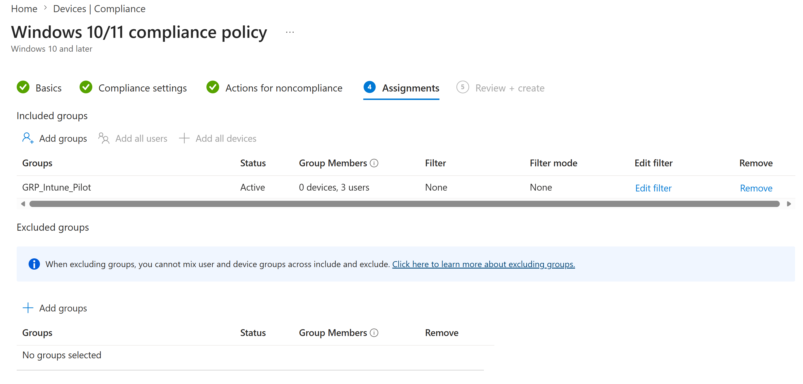
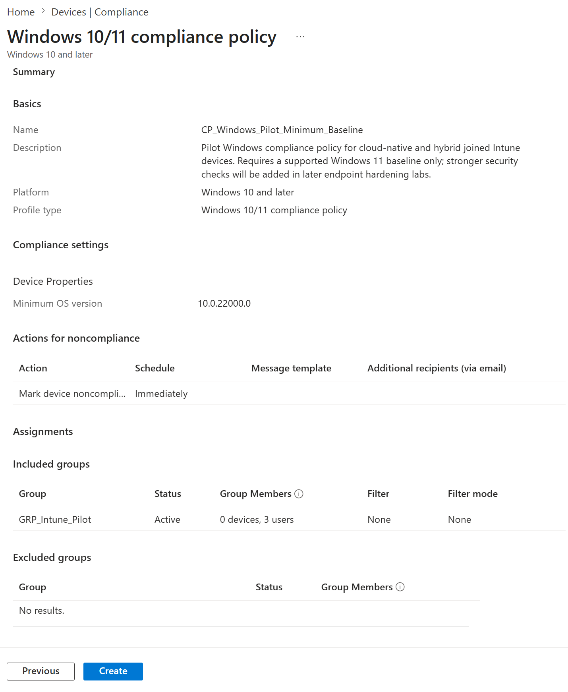
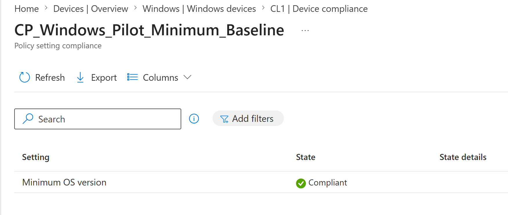
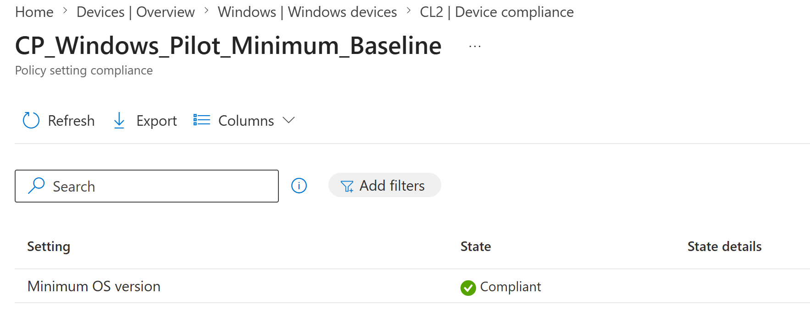
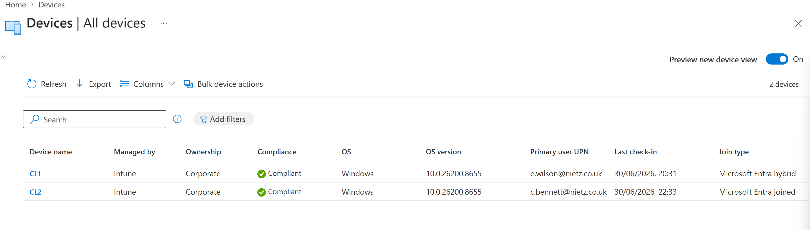

Lab 17: Device Compliance Policy Pilot
Created a pilot Windows compliance policy in Microsoft Intune, required Windows 11 or later and validated that both hybrid-joined CL1 and cloud-native CL2 evaluated as compliant.
Overview
In this lab, I moved from device enrolment validation to compliance policy control. Labs 15 and 16 proved that Nietz Ltd could manage both a cloud-native Microsoft Entra joined device and a hybrid Microsoft Entra joined device through Intune. This lab added a dedicated Windows compliance policy so pilot devices were no longer relying only on the default device compliance policy state.
The policy was assigned to GRP_Intune_Pilot and configured with a minimum OS version of 10.0.22000.0. This requires Windows 11 or later for the pilot device estate while leaving stronger checks such as BitLocker, Secure Boot, Defender Antivirus, firewall and attack surface reduction for later endpoint hardening labs.
Objective
The objective was to create a controlled Windows compliance policy for Intune-managed pilot devices, assign it to the existing Intune pilot group, and validate that both CL1 and CL2 reported compliant against the custom policy.
Environment
| Component | Value |
|---|---|
| Company | Nietz Ltd |
| Microsoft 365 / Entra domain | nietz.co.uk |
| Management platform | Microsoft Intune |
| Compliance policy name | CP_Windows_Pilot_Minimum_Baseline |
| Policy platform | Windows 10 and later |
| Policy profile type | Windows 10/11 compliance policy |
| Minimum OS version | 10.0.22000.0 |
| Assignment group | GRP_Intune_Pilot |
| CL1 assigned user | Emily Wilson - e.wilson@nietz.co.uk |
| CL1 join type | Microsoft Entra hybrid joined |
| CL2 assigned user | Chloe Bennett - c.bennett@nietz.co.uk |
| CL2 join type | Microsoft Entra joined |
| Previous lab dependency | Lab 16: Hybrid Entra Join and Intune Enrolment |
| Next lab dependency | Lab 18: Conditional Access Admin MFA Baseline |
Configuration
1. CL1 Compliance Policy Gap Identified
I reviewed the default device compliance policy detail page for CL1 and confirmed that the device was active and enrolled, but did not yet have a custom compliance policy assigned.

2. Windows Compliance Policy Basics Configured
I created a new Windows 10/11 compliance policy and named it CP_Windows_Pilot_Minimum_Baseline.

3. Windows 11 Minimum OS Requirement Configured
In the Device Properties section, I set the minimum OS version to 10.0.22000.0 and left the other compliance checks unconfigured.

10.0.22000.0, so this setting allows current Windows 11 pilot devices to pass while allowing a Windows 10 test device to be identified as noncompliant in a later validation lab.4. Compliance Policy Assigned to the Intune Pilot Group
I assigned the compliance policy to GRP_Intune_Pilot, the same controlled pilot group used for the Intune enrolment rollout.

GRP_Intune_Pilot.5. Compliance Policy Reviewed Before Creation
I reviewed the final configuration before creating the policy, confirming the policy name, platform, minimum OS version, noncompliance action and included group.

6. CL1 Compliance Evaluation Confirmed
After the policy was created and CL1 checked in, I opened the CL1 device compliance page and confirmed that the custom policy evaluated successfully.

7. CL2 Compliance Evaluation Confirmed
I repeated the validation on CL2 and confirmed that the same custom policy also evaluated successfully on the cloud-native Entra joined device.

8. Pilot Windows Devices Confirmed Compliant in Intune
I reviewed the Intune all devices view and confirmed that both pilot Windows devices were Intune managed, corporate owned and compliant, with the expected primary users and join types.

Validation
The lab was validated when CL1 initially showed that no custom compliance policy was assigned, CP_Windows_Pilot_Minimum_Baseline was created with a minimum OS version of 10.0.22000.0, the policy was assigned to GRP_Intune_Pilot, and both CL1 and CL2 reported the custom policy setting as compliant.
The final Intune device view confirmed that CL1 and CL2 were both managed by Intune, corporate owned, compliant and associated with their expected primary users and join types.
Key Technical Outcomes
This lab demonstrated custom Intune compliance policy creation, Windows minimum OS enforcement, pilot group assignment, user-targeted compliance policy rollout, and compliance validation for both hybrid joined and cloud-native Microsoft Entra joined endpoints.
The final result is a clean compliance baseline that can be reused by later Conditional Access labs without mixing compliance policy creation, endpoint hardening and access enforcement into the same change.
Summary
- I identified that CL1 did not yet have a custom compliance policy assigned.
- I created
CP_Windows_Pilot_Minimum_Baselineas a Windows 10/11 compliance policy. - I configured a minimum OS version of
10.0.22000.0to require Windows 11 or later. - I assigned the policy to
GRP_Intune_Pilot. - I confirmed CL1 was compliant against the custom policy.
- I confirmed CL2 was compliant against the custom policy.
- I confirmed both pilot devices were compliant, corporate owned and Intune managed in the device overview.